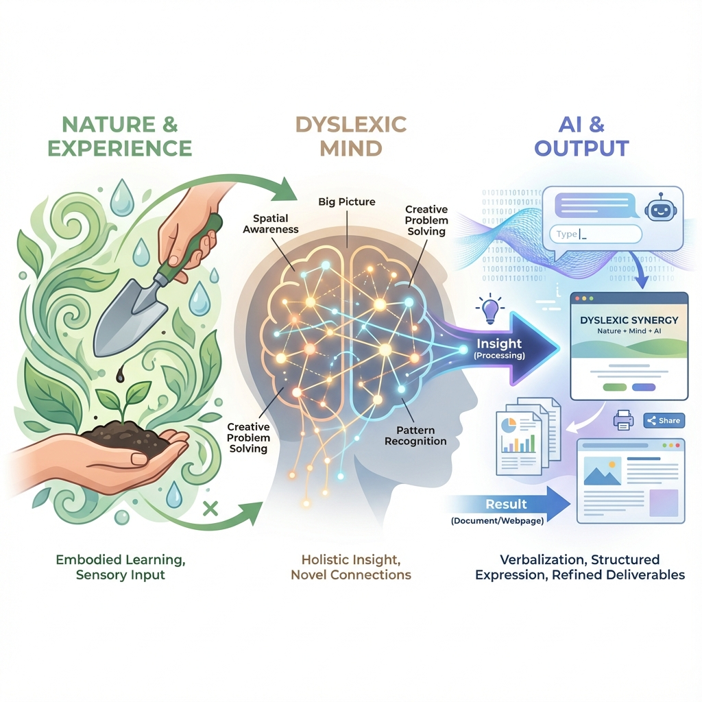

努力しても文字が頭に入らない。
書いても書いても間違える。
「なぜ自分だけできないんだろう」と思ってきた。
あなたは一人ではありません。
これらは努力不足ではありません。
あなたの脳が、文字情報を処理する方法が少し違うだけです。
知的能力には問題がないにもかかわらず、文字の読み書きに著しい困難を持つ状態です。 視覚や聴覚の障害によるものではなく、脳の情報処理の特性に起因します。
3次元空間での物体の位置関係、動き、向きを直感的に把握する能力。建築、エンジニアリング、外科医などの分野で活躍する人が多い。
複数の概念、視点、物事の間の関係性を見出す能力。異なる分野を結びつけたり、隠れたパターンを発見することに長ける。
出来事を物語として構成し、経験から学ぶ能力。過去の事例をもとに将来を予測したり、複雑な状況を物語として理解する。
不完全な情報から全体像を推測する能力。曖昧な状況での判断、創造的な問題解決に強みを発揮する。
ディスレクシアを公表している著名人：
トム・クルーズ（俳優）、スティーブン・スピルバーグ（映画監督）、リチャード・ブランソン（ヴァージン創業者）、
スティーブ・ジョブズ（Apple創業者）、オーランド・ブルーム（俳優）、ウーピー・ゴールドバーグ（女優）など
ChatGPTやClaudeなどの生成AIは、文章の作成、校正、要約を瞬時に行えます。 メールも、報告書も、AIに手伝ってもらえる。
つまり、読み書きの困難はAIで補えるようになりました。
AIは細かい文字処理は得意ですが、「何を作るか」「どう組み合わせるか」という 全体設計や関係性の把握は苦手です。
これはまさにディスレクシアの人が得意な領域。
弱みはAIが補い、強みが最大限活きる。
そんな時代が来ています。
このサイトを運営しているのは、ディスレクシア認知特性
を持っている個人開発者です。
文章を書くことが苦手ですが、AIと協働することで
ソフトウェア開発を続けています。
同時に、徳島で自然農法・リジェネラティブ農業で野菜を栽培中。
観察と直感に基づく野菜作りは、ディスレクシアの認知特性と相性が良いと感じています。

設計は自分、実装はAI。読み書きの負荷を減らし、構造設計に集中。
土壌、植物、気候の関係性を観察し、パターンを読み取る農業。
どちらも「全体の関係性を理解して判断する」能力が核になる。
これは一つの例に過ぎません。
ディスレクシアの強みを活かす道は、人それぞれ違います。
大切なのは「自分にはできない」と思い込まないこと。